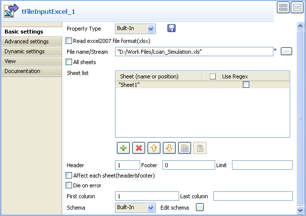
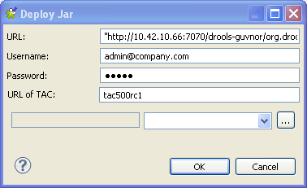
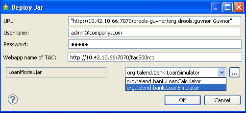

Warning
This component will be available in the Palette of the studio on the condition that you have subscribed to the relevant edition of Talend Data Integration Studio.
|
Component family |
Processing | |
|
Function |
tBRMS retrieves business rules from a Drools Guvnor repository and applies them to a Job. | |
|
Purpose |
tBRMS applies Drools business rules to an incoming flow and writes the output data to an XML file. | |
|
Basic settings |
Property type |
Either Built-in or Repository. |
|
|
|
Built-in: No property data stored centrally. |
|
|
|
Repository: Select the repository file where properties are stored. The fields that follow are completed automatically using the fetched data. |
|
|
Schema and Edit Schema |
A schema is a row description, i.e., it defines the number of fields that will be processed and passed on to the next component. The schema is either Built-in or stored remotely in the Repository. Click Edit Schema to make changes to the schema. Note that if you make changes, the schema automatically becomes built-in. |
|
|
|
Built-in: You create and store the schema locally for only the current component. Related topic: see Talend Data Integration Studio User Guide. |
|
|
|
Repository: The schema already exists and is stored in the Repository, hence can be reused in various projects and Job flowcharts. Related topic: see Talend Data Integration Studio User Guide. |
|
|
XML Field |
Select the XML field for the data to be written to the output file. |
|
|
Guvnor URL |
The Guvnor repository URL. |
| Username and Password | Type in the authentication information used to connect to the Talend Administration Center that incorporates the Guvnor Drools of interest. | |
| Name of TAC application |
Type in the name of the Talend Administration Center that incorporates the Drools Guvnor of interest. For example, when the URL of the Talend Administration Center to be used is http://localhost:8080/tac500, then enter tac500. | |
|
|
Module List |
Either:
- Select the Jar file which contains the business rule to be applied to the data flow.
- Click [...] and enter your Drools Guvnor authentication information in the dialog box window. Then click Select Jar to browse the repository and select the Jar file which contains the business rule to be applied. |
|
|
Guvnor Package |
Between double quotation marks, enter the end part of the path to the URL for binary package, as indicated in the Information and important URLs view of the Drools Guvnor website, when you select a particular package, eg.: "/package/org.talend.bank/LATEST" |
|
|
Class Name |
Enter the name of the class in which the business rule is stored in a Jar file. |
| Drools flow ID (optional) |
A Drools flow describes the order in which a series of business rules are executed. Its flow ID is defined manually when you are creating the Drools flow. When you need to call a specific Drools flow via tBRMS to use the execution order it defines, enter the corresponding flow ID in this field. For further information about how to create a Drools flow, see Talend Data Integration Studio User Guide. | |
|
Advanced Settings |
Configure XML Tree |
Click [...] to map the source schema to the XML output schema. |
|
|
Group by |
Use the tool bar to modify the column order. |
|
|
Advanced separator |
Select this check box to modify the separators used for numbers. |
|
|
Encoding |
Select the encoding type from the list or select Custom and define it manually. This field is compulsory for DB data handling. |
|
|
tStatCatcher Statistics |
Select this check box to collect the log data at the component level. |
|
Usage |
This component handles data flows. Therefore it requires input and output components. | |
|
Limitation |
n/a | |
This scenario describes a five component Job in which tBRMS applies Drools Guvnor business rules to an input flow, in order that relevant data can be retrieved in the output. In this case, rules are applied to input data concerning candidates applying for a loan. The output will show whether the candidates qualify or not.
To do this, proceed as follows:
Drop the following components from the Palette onto the design workspace: tFileInputExcel, tMap, tBRMS, tExtractXMLField, tLogRow.

Link tFileInputExcel to tMap using a Row > Main connection.
Link tMap to tBRMS using a Row > *New Output* (Main) connection.
Link tBRMS to tExtractXMLField using a Row > Main connection and then use another Row > Main connection to connect tExtractXMLField to tLogRow.
To do this, proceed as follows:
Double-click tFileInputExcel to open its Basic settings view:
Next to the File name/Stream field, click [...] to browse to and select the Excel file which contains the input data.
In the Sheet list area, click the [+] button to add a new Sheet row to the table.
Enter the name of the sheet which contains the input data, within double quotation marks.
In the Header field, enter the number of the row which contains the column names.
Double-click tMap to open its Map Editor:
To the top right of the Map Editor, click [+] to add an output schema.

Enter a name for the New output schema in the corresponding field and click OK to close the dialog box:

Map the columns and set the parameters as required, then click Ok to close the Map Editor.
Note
For further information about mapping schemas and defining their parameters, see Talend Data Integration Studio User Guide.
To do this, perform the following operations:
Click tBRMS to open its Basic settings view:

Set the Property Type and Schema as Built-In.
Click [...] next to Edit schema to open the schema editor.
The input schema to the left is automatically retrieved from tMap.

In the output area to the right, click [+] to add a new column which will serve to write the output data to an XML file and enter a name for the column and define the Type as String.
Next to XML Field, select the name of the XML column you entered in the output schema.
Enter the Guvnor URL in the corresponding field.
Enter Talend Administration Center address in the TAC URL field, set the user name and the password used to connect to this TAC in the corresponding fields.
When Drools Guvnor is installed in the same web server as Talend Administration Center, you can use the name of Talend Administration Center application instead of the full URL.
Next to the Module List field, click [...] to open the [Deploy Jar] dialog box. In this dialog box, the URL, Username, Password and URL of TAC fields are already filled with the corresponding information you entered in the earlier steps.
Click [...] to browse the Jar files in the [Select Jarfile] dialog box:

Expand the nodes to browse to and select the Jar file which contains the rules of interest, then click OK to close the dialog box:
From the list next to the selected Jar file, select the corresponding class name and click OK to close the dialog box. In this example, the class is org.talend.bank.LoanSimulator.
A Talend programme transforms the business rule library into a form which can be used in the Job and creates an XSD file at the root of your studio, in /studio_path/Drools/<project_name> .
In the Drools Flow ID (optional) field, enter, between quotation marks, the ID of Drools flow to be used when executing the rules of interest. In this example, it is loanflow. For further information about how to define a Drools flow ID, see Talend Data Integration Studio User Guide.
Click the Advanced Settings tab to set the additional parameters.

In the XML mapping area, click [...] to configure the XML tree:

Right-click the first row in the Link target table and select Import XML Tree.
Browse to and select the XSD file from the root of your studio. The XML Tree schema is completed automatically:

Drop all of the relevant columns from the Schema list onto the corresponding related column fields in the Link target schema:

From the dialog box which appears, select the Create as attribute of target node option.

Right-click the reason field and select Set As Loop Element from the list.
Click OK to close the dialog box.
To extract the data of interest, you need to configure the output flow. The operations to be performed are as follows:
Double-click tExtractXMLField to open its Basic settings view.
Click Edit schema to open the schema editor.

In the Output schema to the right of the editor, add and define the columns exactly as they appear in the tBRMS input schema.
Click OK to close the editor.
In the Loop XPath query field, enter the name of the XML Tree root tag, as it appears in the tBRMS component’s Configure XML Tree editor, preceded by the forward slash symbol and between double quotation marks, for example: "/loanSimulator".
In the XPath query fields, next to the corresponding columns, enter the fields as they appear in the tBRMS component’s XML Tree fields, in the Link Target area of the Configure XML tree editor, between double quotation marks.
Double-click tLogRow to open its Basic settings view:

In the Mode area, select the Table (print values in cells of a table) option.
Save the Job and press F6 to run it.
The results are written to an output table in the Run view:

The business rule has been applied to the input data and the table of results indicates which candidates have been rejected. The name column indicates the reason for which the candidate has been rejected.